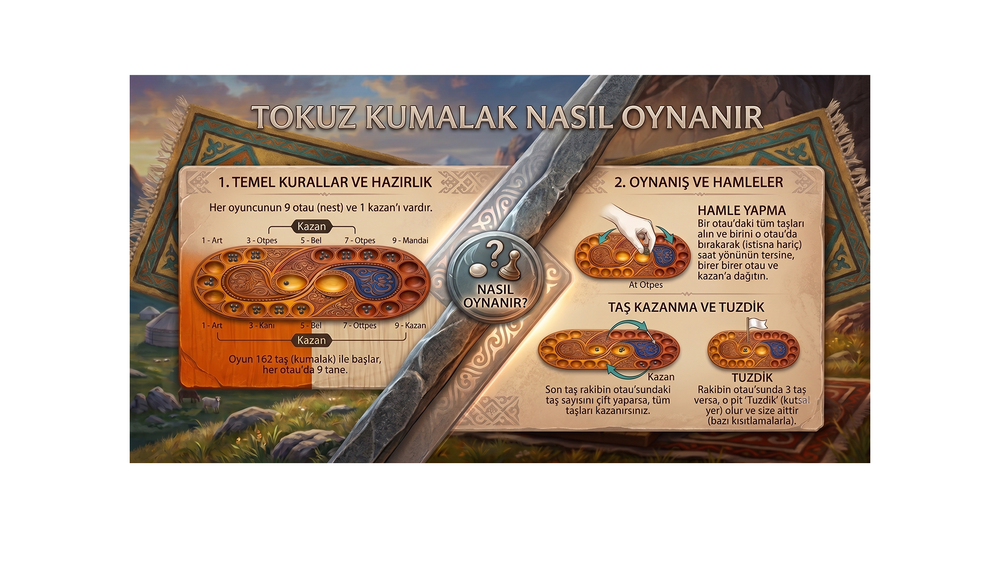

Tokuz Kumalak Yükleniyor
Tokuz Kumalak
Geleneksel Türk Zeka ve Strateji Oyunu
Oyun Modu
👥 İki Oyuncu
🤖 Bilgisayara Karşı
AI Zorluk Seviyesi
Kolay
Zor
OYUNA BAŞLA
📜 NASIL OYNANIR?
✕

Tokuz Kumalak
Geleneksel Türk Zeka ve Strateji Oyunu
Sıra: Oyuncu 1 (Açık Bölge)
HAZİNE 2
0
HAZİNE 1
0
🎉
Başlık
Mesaj
Tamam